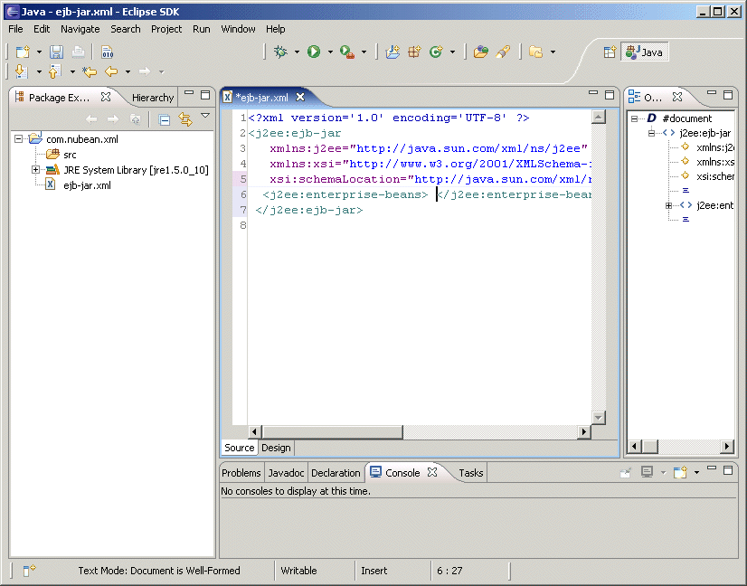
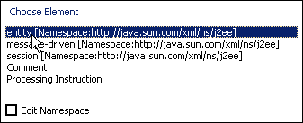
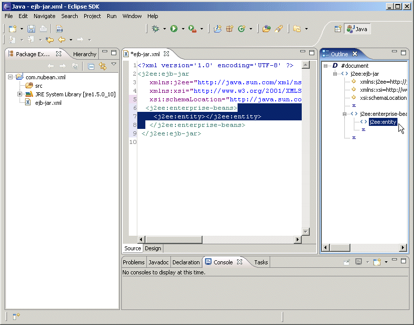
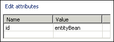
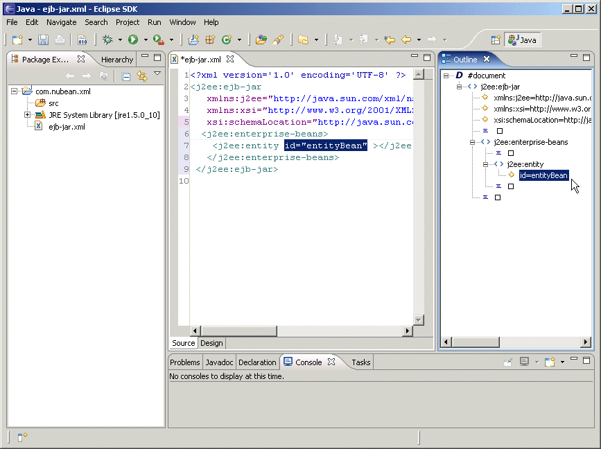

4.0 Editing a Document in
Source Mode
To add an element tag to a document position the cursor to the left of the closing tag of the element to which a sub-element tag is to be added and type the '<' character or select Ctrl>Space. For example, to add a sub-element to the 'enterprise-beans' element in a document of type J2EE>Ejb 2.1, position the cursor to the left of the </enterprise-beans> tag and select Ctrl>Space.
|  |
A choice list of sub-elements gets displayed. To select an element double-click on the element. The element namespaces are also listed with the elements. Select the Edit Namespace checkbox to edit an Element Namespace.
|  |
The selected element is added to the document and the Outline.
|  |
To add an attribute to an element tag position the cursor in the start tag of the element, after the opening '<' or before the closing '>', and press Ctrl>Space. For example press Ctrl>Space in the 'entity' element in a document of type J2EE>Ejb 2.1. An Edit attributes window opens with a attributes sheet of element attributes. To add an attribute to an element, specify value for the attribute and slect Enter.
|  |
The attribute gets added to the element tag and the Outline.
|  |